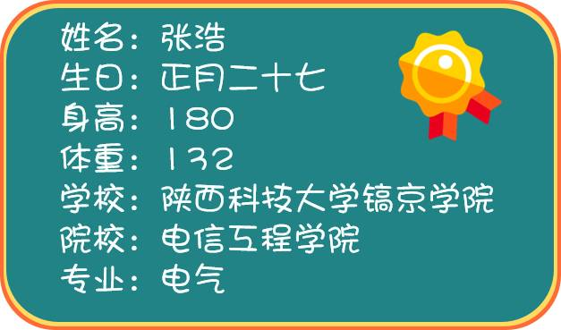

2016-04-27 科奕报社编辑部 科奕
科奕报社，做有态度、有价值、有趣味的陕西科技大学校园新闻资讯分享平台。
运动会开始不久，小奕便发现了一位新晋男神
来自镐京学院的1416号选手——张浩
悄悄地你来了，不经意间你红遍科大的QQ空间
➜➜凭借着一张眉清目秀的脸，他迅速地吸引了众多科大女生的目光，
甚至有了“尾随”他的小粉丝。
▼这是男神的资料卡▼

今天上午的跳高，男神取得了第二的好成绩
他坦言，来之前觉得科大高手很多，能拿前五就好，
但是到最后只剩下他和陈贤星时，就开始想要超越对手。
除了跳高，男神的摄影技术也是相当不错的。
给你们看看男神镜头里的风景吧~
☟ ☟
运动会捧红了镐京男神，更拉近了我们与兄弟院校之间的距离。
小奕恭喜镐京学院在本次运动会上取得的优异成绩，
希望在明年的赛场上能看到更多的镐京男神女神们！
责任编辑：科奕报社编辑部
美术编辑：曾志聪 梁 淼
相关文章 8 篇